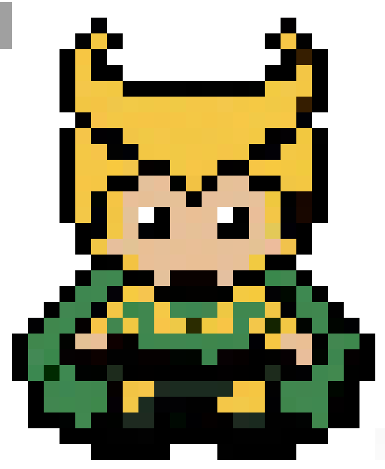

<!DOCTYPE html>
<html lang="en">
<head>
  <meta charset="UTF-8">
  <meta name="viewport" content="width=device-width, initial-scale=1.0">
  <title>TRAVELING SALESPERSON PROBLEM (TSP) // [♜] LOKI — ALGO-VENGERS</title>
  
  <meta name="description" content="Design & Analysis of Algorithms: TRAVELING SALESPERSON PROBLEM (TSP). Mission 05: THE MASTER MISSION.">
  <meta name="theme-color" content="#f8fafc">

  <!-- Google Fonts -->
  <link rel="preconnect" href="https://fonts.googleapis.com">
  <link rel="preconnect" href="https://fonts.gstatic.com" crossorigin>
  <link href="https://fonts.googleapis.com/css2?family=Chakra+Petch:wght@500;700&family=Plus+Jakarta+Sans:wght@400;500;600;700&family=Press+Start+2P&family=Silkscreen:wght@400;700&family=JetBrains+Mono:wght@400;600&display=swap" rel="stylesheet">

  <!-- KaTeX for beautiful math formulas -->
  <link rel="stylesheet" href="https://cdn.jsdelivr.net/npm/katex@0.16.9/dist/katex.min.css">
  <script defer src="https://cdn.jsdelivr.net/npm/katex@0.16.9/dist/katex.min.js"></script>
  <script defer src="https://cdn.jsdelivr.net/npm/katex@0.16.9/dist/contrib/auto-render.min.js"></script>

  <style>
    :root {
      --bg-main: #f8fafc;
      --border-dark: #0f172a;
      --text-main: #0f172a;
      --text-muted: #475569;
      --color-gold: #d97706;
      --color-cyan: #0284c7;
      --hero-accent: #15803d;
      --badge-bg: #dcfce7;

      --font-pixel: 'Press Start 2P', monospace;
      --font-pixel-sub: 'Silkscreen', monospace;
      --font-body: 'Plus Jakarta Sans', system-ui, sans-serif;
      --font-code: 'JetBrains Mono', monospace;
      --top-bar-height: 32px;
      --nav-height: 72px;
      --container-max: 1100px;
    }

    *, *::before, *::after { box-sizing: border-box; margin: 0; padding: 0; }
    
    /* Pixelated retro mouse pointer */
    html, body {
      scroll-behavior: smooth;
      font-size: 16px;
      background-color: var(--bg-main);
      color: var(--text-main);
      font-family: var(--font-body);
      cursor: url("data:image/svg+xml,%3Csvg%20xmlns%3D%22http%3A//www.w3.org/2000/svg%22%20width%3D%2224%22%20height%3D%2224%22%20viewBox%3D%220%200%2024%2024%22%20shape-rendering%3D%22crispEdges%22%3E%20%3Cpath%20fill%3D%22%230f172a%22%20stroke%3D%22%23ffffff%22%20stroke-width%3D%221.5%22%20d%3D%22M2%202v18l5-5%204%208%203-1.5-4-8h6L2%202z%22/%3E%20%3C/svg%3E") 0 0, auto !important;
    }
    
    body {
      overflow-x: hidden;
      min-height: 100vh;
      line-height: 1.6;
      display: flex;
      flex-direction: column;
      background-color: var(--bg-main);
    }

    /* Native CSS Circular Hero Emblem Cursor on all interactive elements (ZERO TRAILING) */
    a, button, .pixel-btn, .topic-card, .mission-card, input, select, label, .top-progress-track-wrapper, .hero-speech-bubble, [role="button"], [data-hero-cursor], .quiz-opt-btn {
      cursor: url("data:image/svg+xml,%3Csvg%20xmlns%3D%22http%3A//www.w3.org/2000/svg%22%20width%3D%2232%22%20height%3D%2232%22%20viewBox%3D%220%200%2032%2032%22%20shape-rendering%3D%22crispEdges%22%3E%20%3Ccircle%20cx%3D%2216%22%20cy%3D%2216%22%20r%3D%2214%22%20fill%3D%22%2315803d%22%20stroke%3D%22%23ca8a04%22%20stroke-width%3D%222%22/%3E%20%3Cpath%20d%3D%22M8%208%20Q12%2018%2016%2018%20Q20%2018%2024%208%20Q21%2016%2016%2020%20Q11%2016%208%208%20Z%22%20fill%3D%22%23facc15%22%20stroke%3D%22%23000%22%20stroke-width%3D%221%22/%3E%20%3Ccircle%20cx%3D%2216%22%20cy%3D%2220%22%20r%3D%222%22%20fill%3D%22%2322c55e%22/%3E%20%3C/svg%3E") 16 16, pointer !important;
    }

    .cyber-grid-bg {
      position: fixed; top: 0; left: 0; width: 100%; height: 100%;
      background-image: linear-gradient(to right, rgba(15, 23, 42, 0.05) 1px, transparent 1px), linear-gradient(to bottom, rgba(15, 23, 42, 0.05) 1px, transparent 1px);
      background-size: 32px 32px; pointer-events: none; z-index: 0;
    }
    .container { max-width: var(--container-max); margin: 0 auto; padding: 0 24px; position: relative; z-index: 2; }
    .pixel-heading { font-family: var(--font-pixel); letter-spacing: 1px; text-transform: uppercase; }

    /* Pixel Buttons */
    .pixel-btn {
      display: inline-flex; align-items: center; justify-content: center; gap: 8px;
      padding: 10px 18px; font-family: var(--font-pixel); font-size: 0.65rem;
      text-decoration: none; text-transform: uppercase; border: 3px solid var(--border-dark);
      position: relative; user-select: none;
      transition: transform 0.1s ease, box-shadow 0.1s ease;
      box-shadow: -3px 0 0 0 var(--border-dark), 3px 0 0 0 var(--border-dark), 0 -3px 0 0 var(--border-dark), 0 3px 0 0 var(--border-dark), 0 4px 0 0 var(--border-dark);
    }
    .pixel-btn:hover { transform: translateY(-2px); box-shadow: -3px 0 0 0 var(--border-dark), 3px 0 0 0 var(--border-dark), 0 -3px 0 0 var(--border-dark), 0 3px 0 0 var(--border-dark), 0 6px 0 0 var(--border-dark); }
    .pixel-btn:active { transform: translateY(2px); box-shadow: -3px 0 0 0 var(--border-dark), 3px 0 0 0 var(--border-dark), 0 -3px 0 0 var(--border-dark), 0 3px 0 0 var(--border-dark), 0 2px 0 0 var(--border-dark); }
    .pixel-btn-primary { background: #facc15; color: #0f172a; font-weight: bold; }
    .pixel-btn-secondary { background: #ffffff; color: var(--color-cyan); }
    .pixel-btn-accent { background: var(--hero-accent); color: #ffffff; }

    /* Sticky Navbar */
    .pixel-navbar {
      position: fixed; top: var(--top-bar-height); left: 0; width: 100%; height: var(--nav-height);
      background: rgba(255, 255, 255, 0.96); backdrop-filter: blur(10px);
      border-bottom: 3px solid var(--border-dark); z-index: 1000; display: flex; align-items: center;
    }
    .nav-container { display: flex; align-items: center; justify-content: space-between; width: 100%; max-width: var(--container-max); margin: 0 auto; padding: 0 24px; }
    .nav-brand { display: flex; align-items: center; gap: 12px; text-decoration: none; }
    .brand-icon { width: 36px; height: 36px; background: #facc15; border: 2px solid var(--border-dark); display: flex; align-items: center; justify-content: center; }
    .brand-icon svg { width: 22px; height: 22px; fill: var(--border-dark); }
    .brand-text { font-family: var(--font-pixel); font-size: 1.05rem; color: var(--border-dark); }
    .brand-text span { color: #dc2626; }
    .breadcrumbs { font-family: var(--font-pixel); font-size: 0.6rem; color: var(--text-muted); display: flex; align-items: center; gap: 6px; }
    .breadcrumbs a { color: var(--color-cyan); text-decoration: none; }

    /* Persistent Top Reading Progress Bar */
    #global-top-progress {
      position: fixed; top: 0; left: 0; width: 100%; height: var(--top-bar-height);
      background: #0f172a; border-bottom: 2px solid #000; z-index: 10002;
      display: flex; align-items: center; justify-content: space-between; padding: 0 16px;
      box-shadow: 0 2px 8px rgba(0,0,0,0.4);
    }
    .top-progress-hero-badge {
      display: flex; align-items: center; gap: 8px; flex-shrink: 0;
    }
    .top-hero-symbol-box {
      width: 22px; height: 22px; background: #dcfce7; color: #15803d;
      border: 1.5px solid #15803d; font-family: var(--font-pixel); font-size: 0.75rem;
      display: flex; align-items: center; justify-content: center; border-radius: 2px;
    }
    .top-hero-title {
      font-family: var(--font-pixel); font-size: 0.58rem; color: #f8fafc; letter-spacing: 0.5px;
    }
    .top-progress-track-wrapper {
      flex: 1; max-width: 650px; margin: 0 20px; height: 10px; background: #1e293b;
      border: 1.5px solid #475569; border-radius: 999px; position: relative; cursor: pointer;
    }
    .top-progress-fill-bar {
      height: 100%; width: 0%; background: linear-gradient(90deg, #15803d, #16a34a, #ca8a04); border-radius: 999px;
      transition: width 0.08s ease-out;
    }
    .top-progress-slider-marker {
      position: absolute; top: 50%; left: 0%; transform: translate(-50%, -50%);
      width: 22px; height: 22px; background: #0f172a; border: 2px solid #15803d;
      border-radius: 50%; display: flex; align-items: center; justify-content: center;
      font-family: var(--font-pixel); font-size: 0.65rem; color: #15803d;
      box-shadow: 0 0 10px #15803d; pointer-events: none; transition: left 0.08s ease-out;
    }
    .top-progress-percent-readout {
      font-family: var(--font-pixel); font-size: 0.65rem; color: #facc15; min-width: 50px; text-align: right; flex-shrink: 0;
    }

    /* Main Container */
    main { flex: 1; padding-top: calc(var(--nav-height) + var(--top-bar-height) + 24px); padding-bottom: 60px; }

    /* Topic Hero Section */
    .topic-hero {
      background: #ffffff; border: 3px solid var(--border-dark);
      box-shadow: 0 6px 0 var(--border-dark); padding: 32px;
      margin-bottom: 32px; display: grid; grid-template-columns: auto 1fr; gap: 28px; align-items: center;
    }
    .hero-sprite-frame {
      width: 120px; height: 130px; background: var(--badge-bg);
      border: 3px solid var(--border-dark); display: flex; align-items: center; justify-content: center;
      position: relative; box-shadow: 0 4px 0 var(--border-dark); overflow: hidden;
    }
    .hero-avatar-img {
      max-width: 100px; max-height: 112px; width: auto; height: auto;
      object-fit: contain; image-rendering: pixelated;
      filter: drop-shadow(0 4px 8px rgba(0,0,0,0.25)); transition: transform 0.2s cubic-bezier(0.175, 0.885, 0.32, 1.275);
    }
    .topic-hero:hover .hero-avatar-img { transform: scale(1.1) translateY(-3px); }

    .hero-meta-tag {
      display: inline-block; font-family: var(--font-pixel); font-size: 0.6rem;
      background: #ffffff; border: 2px solid var(--border-dark); padding: 3px 10px;
      margin-bottom: 10px; font-weight: bold; color: var(--hero-accent); box-shadow: 0 2px 0 var(--border-dark);
    }
    .hero-title { font-size: 1.6rem; margin-bottom: 12px; line-height: 1.3; color: var(--border-dark); }
    .hero-tagline { font-family: var(--font-code); font-size: 0.95rem; color: var(--text-muted); margin-bottom: 14px; font-weight: 600; }
    .hero-quote-box {
      background: #f1f5f9; border-left: 4px solid var(--hero-accent);
      padding: 10px 14px; font-style: italic; color: #1e293b; font-size: 0.88rem;
    }

    /* Content Cards */
    .content-card {
      background: #ffffff; border: 3px solid var(--border-dark);
      box-shadow: 0 5px 0 var(--border-dark); padding: 28px; margin-bottom: 28px;
    }
    .card-heading {
      display: flex; justify-content: space-between; align-items: center;
      font-family: var(--font-pixel); font-size: 0.85rem; color: var(--border-dark);
      margin-bottom: 18px; border-bottom: 2px solid #e2e8f0; padding-bottom: 10px;
    }
    .card-desc-text { font-size: 0.95rem; color: #1e293b; line-height: 1.7; margin-bottom: 16px; }
    
    .math-callout {
      background: #f1f5f9; border: 2px solid var(--border-dark); padding: 16px 20px;
      font-size: 0.95rem; margin-bottom: 16px; color: #0f172a;
      box-shadow: 0 3px 0 var(--border-dark); overflow-x: auto;
    }

    /* Table */
    .algo-table { width: 100%; border-collapse: collapse; margin-top: 10px; font-size: 0.9rem; }
    .algo-table th, .algo-table td { border: 2px solid var(--border-dark); padding: 12px 14px; text-align: left; }
    .algo-table th { background: #f8fafc; font-family: var(--font-pixel); font-size: 0.65rem; color: var(--border-dark); }
    .complexity-badge {
      display: inline-block; font-family: var(--font-code); font-weight: bold;
      background: var(--badge-bg); color: var(--hero-accent); border: 1px solid var(--hero-accent);
      padding: 3px 8px; border-radius: 4px; font-size: 0.85rem;
    }

    /* Code Block */
    .code-box {
      background: #0f172a; color: #f8fafc; border: 3px solid var(--border-dark);
      padding: 20px; font-family: var(--font-code); font-size: 0.85rem; line-height: 1.6;
      overflow-x: auto; position: relative; box-shadow: 0 5px 0 var(--border-dark);
    }
    .code-header {
      display: flex; justify-content: space-between; align-items: center;
      margin-bottom: 10px; font-family: var(--font-pixel); font-size: 0.65rem; color: #94a3b8;
    }

    /* Interactive Visualizer Canvas */
    .viz-container {
      background: #f8fafc; border: 2px dashed var(--border-dark); padding: 20px;
      border-radius: 4px; display: flex; flex-direction: column; align-items: center; gap: 16px;
    }

    /* Speech Bubble */
    .hero-speech-bubble { transition: transform 0.15s ease; }
    .hero-speech-bubble:hover { transform: translateY(-2px); }

    /* Bottom Actions */
    .bottom-section {
      text-align: center; margin-top: 30px; display: flex; flex-direction: column;
      align-items: center; gap: 16px;
    }
    .pixel-divider { width: 180px; height: 4px; background: repeating-linear-gradient(to right, var(--border-dark) 0px, var(--border-dark) 8px, transparent 8px, transparent 16px); }
  </style>
</head>
<body>

  <div class="cyber-grid-bg"></div>

  <!-- Persistent Top Reading Progress Bar -->
  <div id="global-top-progress">
    <div class="top-progress-hero-badge">
      <div class="top-hero-symbol-box">[♜]</div>
      <div class="top-hero-title">LOKI // Asgardian Horned Crown</div>
    </div>
    <div class="top-progress-track-wrapper" id="global-progress-track" title="Click anywhere along the bar to jump in the dossier">
      <div class="top-progress-fill-bar" id="global-progress-fill"></div>
      <div class="top-progress-slider-marker" id="global-progress-marker">♜</div>
    </div>
    <div class="top-progress-percent-readout" id="global-progress-pct">0%</div>
  </div>

  <!-- Sticky Navbar -->
  <header class="pixel-navbar">
    <div class="nav-container">
      <a href="index.html" class="nav-brand">
        <div class="brand-icon"><svg viewBox="0 0 24 24"><polygon points="12,2 8,20 11,20 12,14 16,14 17,20 20,20 15,2"/><polygon points="12,6 10,12 14,12" fill="#facc15"/></svg></div>
        <div class="brand-text">ALGO-<span>VENGERS</span></div>
      </a>

      <div class="breadcrumbs">
        <a href="index.html">HQ</a> <span>▶</span>
        <a href="missions.html">MISSIONS</a> <span>▶</span>
        <a href="mission-05.html">MISSION 05</a> <span>▶</span>
        <span style="color: var(--border-dark); font-weight: bold;">TOPIC 01</span>
      </div>

      <div>
        <a href="mission-05.html" class="pixel-btn pixel-btn-secondary" style="padding: 6px 12px; font-size: 0.6rem;">← MISSION HUB</a>
      </div>
    </div>
  </header>

  <main>
    <div class="container">

      <!-- Topic Hero Section -->
      <section class="topic-hero">
        <div class="hero-sprite-frame">
          
        </div>
        <div>
          <span class="hero-meta-tag">MISSION 05 // [♜] LOKI</span>
          <h1 class="hero-title pixel-heading">TRAVELING SALESPERSON PROBLEM (TSP)</h1>
          <div class="hero-tagline">ASGARDIAN ILLUSIONS & NP-HARD EXPLOSION // Held-Karp Multiverse Tour TSP</div>
          <div class="hero-quote-box">"I am burdened with glorious purpose! To rule all realms, one must traverse every planetary capital exactly once and return home with minimal cosmic fuel."</div>
        </div>
      </section>

      <!-- 01. S.H.I.E.L.D. Mission Briefing & Marvel Story -->
      <section class="content-card" style="border-left: 6px solid #15803d;">
        <h2 class="card-heading">
          <span>01. S.H.I.E.L.D. MISSION BRIEFING // OP-LOKI-18</span>
          <span style="font-size: 0.6rem; color: var(--hero-accent);">THE MULTIVERSE CONQUEST GRAND TOUR</span>
        </h2>
        <div class="card-desc-text" style="font-size: 1.02rem; font-weight: 500; color: #0f172a; margin-bottom: 12px;">
          Loki has acquired the Tesseract and intends to establish glorious dominion over 5 planetary capitals. He must depart from Asgard, visit every capital exactly once, and return to Asgard while expending minimum Tesseract energy.
        </div>
        <div style="background: #f1f5f9; border: 2px dashed #475569; padding: 12px 16px; margin-bottom: 10px;">
          <div style="font-family: var(--font-pixel); font-size: 0.6rem; color: #dc2626; margin-bottom: 4px;">CRITICAL CRISIS:</div>
          <div style="font-size: 0.9rem; color: #334155;">Finding the minimum Hamiltonian cycle across N cities suffers from factorial explosion: (n - 1)! / 2 tours. For even 20 cities, brute force takes billions of years.</div>
        </div>
        <div style="background: #ecfdf5; border: 2px solid #10b981; padding: 12px 16px;">
          <div style="font-family: var(--font-pixel); font-size: 0.6rem; color: #059669; margin-bottom: 4px;">TACTICAL OBJECTIVE:</div>
          <div style="font-size: 0.9rem; color: #065f46;">Help Loki evaluate tour legs, avoid redundant permutations with bitmasks, and lock in the minimal Hamiltonian cycle.</div>
        </div>
      </section>

      <!-- 02. Formal Specification & Problem Invariants -->
      <section class="content-card">
        <h2 class="card-heading">
          <span>02. FORMAL PROBLEM SPECIFICATION & INVARIANTS</span>
          <span style="font-size: 0.6rem; color: var(--hero-accent);">ACADEMIC CURRICULUM</span>
        </h2>
        <div class="card-desc-text">
<p>The <strong>Traveling Salesperson Problem (TSP)</strong> is one of the most famous, heavily studied problems in computer science and combinatorial optimization. It belongs to the notorious class of <strong>NP-Hard</strong> problems.</p>
<p><strong>Formal Problem Statement:</strong></p>
<ul>
  <li>Given a complete weighted graph \(G = (V, E)\) with \(n = |V|\) cities and distance matrix \(C_{ij}\).</li>
  <li>A salesperson must visit <strong>every city exactly once</strong> and return to the starting departure city.</li>
  <li>Such a closed tour visiting every vertex once is termed a <strong>Hamiltonian Cycle</strong>.</li>
  <li><strong>Objective:</strong> Find a Hamiltonian cycle with the <strong>minimum total tour distance</strong>:
      \[ \min \sum_{k=1}^{n-1} C_{\pi(k), \pi(k+1)} + C_{\pi(n), \pi(1)} \]
  </li>
</ul>
<p><strong>The Combinatorial Explosion:</strong></p>
<p>For a directed graph of \(n\) cities, there are \((n - 1)!\) possible tours. For an undirected symmetric graph (\(C_{ij} = C_{ji}\)), there are \(rac{(n - 1)!}{2}\) distinct tours. For just \(n = 20\) cities, the search space contains \(pprox 6.08 	imes 10^{16}\) tours!</p>
</div>
      </section>

      <!-- Speech Bubble Callout 1 -->
      
    <div class="hero-speech-bubble" style="display: flex; align-items: flex-start; gap: 16px; background: #ffffff; border: 3px solid #0f172a; box-shadow: 0 4px 0 #0f172a; padding: 16px; margin: 24px 0;">
      <div style="width: 58px; height: 62px; background: #dcfce7; border: 2px solid #0f172a; display: flex; align-items: center; justify-content: center; flex-shrink: 0; box-shadow: 0 2px 4px rgba(0,0,0,0.2);">
        
      </div>
      <div style="position: relative; flex: 1;">
        <div style="font-family: var(--font-pixel); font-size: 0.62rem; color: #15803d; margin-bottom: 4px;">
          [♜] COMM-LINK // Loki
        </div>
        <div style="font-size: 0.92rem; color: #1e293b; line-height: 1.6;">
          "I am burdened with glorious purpose! You mortals thought n! was an inescapable curse. With Held-Karp bitmask memoization, we tame the combinatorial explosion down to n^2 * 2^n!"
        </div>
      </div>
    </div>
    

      <!-- 03. Naive Approach vs Optimal Formulation -->
      <section class="content-card">
        <h2 class="card-heading">
          <span>03. BRUTE FORCE VS ALGORITHMIC OPTIMALITY</span>
          <span style="font-size: 0.6rem; color: var(--color-gold);">STRATEGIC COMPARISON</span>
        </h2>
        <div class="card-desc-text">
<p>A naive brute force permutation search tests all \((n-1)!\) tours. For \(n = 25\), brute force would take billions of years even on the world's fastest supercomputers. Loki's <strong>Held-Karp Dynamic Programming Algorithm</strong> uses state-space memoization over subsets of visited vertices, reducing runtime from \(\Theta(n!)\) down to \(\Theta(n^2 2^n)\), making problems up to \(n = 30\) solvable.</p>
<div style="display:grid; grid-template-columns: 1fr 1fr; gap:16px; margin-top:12px;">
  <div style="background:#fee2e2; border:2px solid #ef4444; padding:12px; font-size:0.85rem;">
    <strong style="color:#b91c1c;">BRUTE FORCE PERMUTATIONS</strong><br>
    Complexity: \(\Theta(n!)\)<br>
    \(n = 20 \implies 1.2 	imes 10^{17}\) tours.<br>
    Factorial explosion; utterly intractable.
  </div>
  <div style="background:#dcfce7; border:2px solid #16a34a; padding:12px; font-size:0.85rem;">
    <strong style="color:#15803d;">HELD-KARP DYNAMIC PROGRAMMING</strong><br>
    Complexity: \(\Theta(n^2 2^n)\)<br>
    \(n = 20 \implies 20^2 	imes 2^{20} pprox 4.19 	imes 10^8\) ops.<br>
    Executes in under 1 second on a standard CPU!
  </div>
</div>
</div>
        <div style="background: #eff6ff; border-left: 4px solid #2563eb; padding: 12px 16px; margin-top: 12px;">
          <div style="font-family: var(--font-pixel); font-size: 0.6rem; color: #1d4ed8; margin-bottom: 4px;">WHY THIS ALGORITHM WINS:</div>
          <div style="font-size: 0.9rem; color: #1e3a8a;">The Held-Karp Dynamic Programming algorithm uses subset bitmask memoization g(i, S), reducing time from O(n!) to O(n^2 * 2^n), solving the problem in seconds.</div>
        </div>
      </section>

      <!-- 04. Mathematical Formulation & Recurrence Derivation -->
      <section class="content-card">
        <h2 class="card-heading">
          <span>04. MATHEMATICAL PROOFS & RECURRENCES</span>
          <span style="font-size: 0.6rem; color: #2563eb;">KATEX FORMULATION</span>
        </h2>
        <div class="math-callout">
<p><strong>Held-Karp Dynamic Programming Recurrence:</strong></p>
<p>Let \(g(i, S)\) be the minimum cost of a path starting at vertex \(1\), visiting every vertex in subset \(S \subseteq \{2, 3, \dots, n\}\) exactly once, and ending at vertex \(i \in S\):</p>
\[ g(i, S) = \min_{j \in S \setminus \{i\}} \left\{ g(j, S \setminus \{i\}) + C_{ji} \right\} \]
<p><strong>Base Case:</strong> For subsets of size 1 containing only vertex \(i\):</p>
\[ g(i, \{i\}) = C_{1, i} \]
<p><strong>Optimal Tour Final Answer:</strong></p>
\[ \text{Opt Cost} = \min_{j \in \{2, \dots, n\}} \left\{ g(j, \{2, \dots, n\}) + C_{j, 1} \right\} \]
<p><strong>Complexity Derivation:</strong></p>
<ul>
  <li>Number of subsets \(S \subseteq V\): \(2^n\).</li>
  <li>Number of ending vertices \(i\): \(n\). Total states = \(n \cdot 2^n\).</li>
  <li>Transitions per state: \(n\) choices for predecessor \(j\).</li>
  <li><strong>Total Time:</strong> \(\Theta(n^2 2^n)\). <strong>Space:</strong> \(\Theta(n 2^n)\).</li>
</ul>
</div>
      </section>

      <!-- Speech Bubble Callout 2 -->
      
    <div class="hero-speech-bubble" style="display: flex; align-items: flex-start; gap: 16px; background: #ffffff; border: 3px solid #0f172a; box-shadow: 0 4px 0 #0f172a; padding: 16px; margin: 24px 0;">
      <div style="width: 58px; height: 62px; background: #dcfce7; border: 2px solid #0f172a; display: flex; align-items: center; justify-content: center; flex-shrink: 0; box-shadow: 0 2px 4px rgba(0,0,0,0.2);">
        
      </div>
      <div style="position: relative; flex: 1;">
        <div style="font-family: var(--font-pixel); font-size: 0.62rem; color: #15803d; margin-bottom: 4px;">
          [♜] TACTICAL ADVICE // Loki
        </div>
        <div style="font-size: 0.92rem; color: #1e293b; line-height: 1.6;">
          "Remember the metric shortcut: when triangle inequality holds, doubling the Minimum Spanning Tree guarantees a tour no worse than 2x optimal! Chaos magic made practical."
        </div>
      </div>
    </div>
    

      <!-- 05. Concrete Worked Numerical Example -->
      <section class="content-card">
        <h2 class="card-heading">
          <span>05. STEP-BY-STEP WORKED CALCULATION EXAMPLE</span>
          <span style="font-size: 0.6rem; color: #16a34a;">NUMERICAL TRACE</span>
        </h2>
        <div class="card-desc-text">
<p><strong>Worked Example (4 Cities):</strong> Cost matrix \(C\) between cities \(\{1, 2, 3, 4\}\):</p>
\[ C = egin{pmatrix} 0 & 10 & 15 & 20 \ 10 & 0 & 35 & 25 \ 15 & 35 & 0 & 30 \ 20 & 25 & 30 & 0 \end{pmatrix} \]
<ol style="margin-left:20px; line-height:1.8;">
  <li><strong>Stage 1 (Subsets of size 1):</strong>
      <br>\(g(2, \{2\}) = C_{12} = \mathbf{10}\)
      <br>\(g(3, \{3\}) = C_{13} = \mathbf{15}\)
      <br>\(g(4, \{4\}) = C_{14} = \mathbf{20}\)
  </li>
  <li><strong>Stage 2 (Subsets of size 2):</strong>
      <br>\(g(2, \{2, 3\}) = g(3, \{3\}) + C_{32} = 15 + 35 = 50\)
      <br>\(g(3, \{2, 3\}) = g(2, \{2\}) + C_{23} = 10 + 35 = 45\)
      <br>\(g(2, \{2, 4\}) = g(4, \{4\}) + C_{42} = 20 + 25 = 45\)
      <br>\(g(4, \{2, 4\}) = g(2, \{2\}) + C_{24} = 10 + 25 = 35\)
      <br>\(g(3, \{3, 4\}) = g(4, \{4\}) + C_{43} = 20 + 30 = 50\)
      <br>\(g(4, \{3, 4\}) = g(3, \{3\}) + C_{34} = 15 + 30 = 45\)
  </li>
  <li><strong>Stage 3 (Subsets of size 3 = {2, 3, 4}):</strong>
      <br>\(g(2, \{2,3,4\}) = \min(g(3,\{3,4\}) + C_{32}, g(4,\{3,4\}) + C_{42}) = \min(50+35, 45+25) = \mathbf{70}\)
      <br>\(g(3, \{2,3,4\}) = \min(g(2,\{2,4\}) + C_{23}, g(4,\{2,4\}) + C_{43}) = \min(45+35, 35+30) = \mathbf{65}\)
      <br>\(g(4, \{2,3,4\}) = \min(g(2,\{2,3\}) + C_{24}, g(3,\{2,3\}) + C_{34}) = \min(50+25, 45+30) = \mathbf{75}\)
  </li>
  <li><strong>Final Return to City 1:</strong>
      <br>\(	ext{Cost} = \min(g(2) + C_{21}, g(3) + C_{31}, g(4) + C_{41})\)
      <br>\(= \min(70 + 10, 65 + 15, 75 + 20) = \min(80, 80, 95) = \mathbf{80}\).
  </li>
</ol>
<p><strong>Optimal Tour:</strong> \(1 	o 2 	o 4 	o 3 	o 1\) (Distance = \(10 + 25 + 30 + 15 = \mathbf{80}\)).</p>
</div>
      </section>

      <!-- 06. Interactive Physical Tactical Simulation Arena -->
      <section class="content-card">
        <h2 class="card-heading">
          <span>06. RETRO PHYSICAL GAME SIMULATION & YOUR CUSTOM INPUTS</span>
          <span style="font-size: 0.6rem; color: var(--color-cyan);">LIVE SIMULATION CONSOLE</span>
        </h2>
        <div class="viz-container">
          <div class="sim-tactical-header" style="display: flex; align-items: center; justify-content: space-between; width: 100%; margin-bottom: 16px; padding: 12px 18px; background: #0f172a; border: 3px solid var(--border-dark); color: #f8fafc; box-shadow: 0 4px 0 var(--border-dark);">
            <div style="display: flex; align-items: center; gap: 14px;">
              <div style="width: 52px; height: 56px; background: #dcfce7; border: 2px solid #ffffff; display: flex; align-items: center; justify-content: center; overflow: hidden; box-shadow: 0 2px 4px rgba(0,0,0,0.4);">
                
              </div>
              <div>
                <div style="font-family: var(--font-pixel); font-size: 0.7rem; color: #facc15;">OPERATOR: [♜] LOKI</div>
                <div style="font-family: var(--font-pixel-sub); font-size: 0.8rem; color: #94a3b8;">TACTICAL DAA PHYSICAL SIMULATION ENGINE</div>
              </div>
            </div>
            <div style="font-family: var(--font-pixel); font-size: 0.6rem; background: #1e293b; color: #22c55e; padding: 6px 12px; border: 1px solid #475569;">
              STATUS: READY
            </div>
          </div>
          
<div class="sim-game-wrapper" style="width: 100%; text-align: left;">
  <div style="display: flex; justify-content: space-between; align-items: center; margin-bottom: 12px; border-bottom: 2px solid #334155; padding-bottom: 8px;">
    <div>
      <span style="font-family: var(--font-pixel); font-size: 0.75rem; color: #15803d;">MISSION: THE MULTIVERSE CONQUEST GRAND TOUR</span>
      <p style="font-size: 0.82rem; color: #64748b; margin-top: 2px;">Watch Loki avoid factorial explosion using Held-Karp subset bitmask memoization.</p>
    </div>
    <div style="font-family: var(--font-pixel); font-size: 0.65rem; background: #1e293b; color: #facc15; padding: 6px 10px; border: 1px solid #475569;">
      TOUR: <span id="loki-tour-path" style="color: #38bdf8;">A -> ... -> A</span> | COST: <span id="loki-tour-cost" style="color: #22c55e;">0</span>
    </div>
  </div>

  <!-- Tour Comparison Header Bar -->
  <div style="background: #f1f5f9; border: 2px solid #0f172a; padding: 10px 14px; margin-bottom: 14px; display: flex; flex-wrap: wrap; align-items: center; justify-content: space-between; gap: 10px;">
    <div style="font-family: var(--font-pixel); font-size: 0.62rem; color: #0f172a;">
      CITIES: 4 (Asgard [0], Midgard [1], Jotunheim [2], Sakaar [3])
    </div>
    <div style="font-family: var(--font-code); font-size: 0.8rem; font-weight: bold; color: #15803d;">
      HELD-KARP: O(n^2 * 2^n) vs BRUTE FORCE: O(n!)
    </div>
  </div>

  <!-- Animated Arena Stage -->
  <div style="background: #090d16; border: 3px solid #0f172a; padding: 18px; border-radius: 6px; box-shadow: inset 0 0 16px rgba(0,0,0,0.9); margin-bottom: 14px; position: relative; min-height: 290px; overflow: hidden;">
    <!-- Loki Actor -->
    <div id="loki-actor" style="position: absolute; top: 15px; left: 160px; transition: all 0.4s cubic-bezier(0.34, 1.56, 0.64, 1); z-index: 20; display: flex; flex-direction: column; align-items: center;">
      <div style="font-family: var(--font-pixel); font-size: 0.5rem; background: #15803d; color: #fff; padding: 1px 4px; border-radius: 2px; margin-bottom: 2px;">♜ LOKI</div>
      
    </div>

    <!-- Planetary Cities Tour Graph SVG -->
    <svg id="loki-tour-svg" style="width: 100%; height: 260px;">
      <!-- Realm Coordinates: A(180,60), M(380,60), S(380,200), J(180,200) -->
      <!-- Outer Cycle Lines -->
      <line id="tsp-edge-am" x1="180" y1="60" x2="380" y2="60" stroke="#475569" stroke-width="3"/>
      <line id="tsp-edge-ms" x1="380" y1="60" x2="380" y2="200" stroke="#475569" stroke-width="3"/>
      <line id="tsp-edge-sj" x1="380" y1="200" x2="180" y2="200" stroke="#475569" stroke-width="3"/>
      <line id="tsp-edge-ja" x1="180" y1="200" x2="180" y2="60" stroke="#475569" stroke-width="3"/>
      <!-- Diagonal Lines -->
      <line id="tsp-edge-as" x1="180" y1="60" x2="380" y2="200" stroke="#475569" stroke-width="2" stroke-dasharray="4,4"/>
      <line id="tsp-edge-mj" x1="380" y1="60" x2="180" y2="200" stroke="#475569" stroke-width="2" stroke-dasharray="4,4"/>

      <!-- Edge Weight Labels -->
      <text x="270" y="50" fill="#38bdf8" font-family="'JetBrains Mono'" font-size="11" font-weight="bold">10</text>
      <text x="395" y="135" fill="#38bdf8" font-family="'JetBrains Mono'" font-size="11" font-weight="bold">15</text>
      <text x="270" y="225" fill="#38bdf8" font-family="'JetBrains Mono'" font-size="11" font-weight="bold">20</text>
      <text x="145" y="135" fill="#38bdf8" font-family="'JetBrains Mono'" font-size="11" font-weight="bold">25</text>
      <text x="300" y="115" fill="#94a3b8" font-family="'JetBrains Mono'" font-size="10">35</text>
      <text x="250" y="115" fill="#94a3b8" font-family="'JetBrains Mono'" font-size="10">30</text>

      <!-- Planetary Nodes -->
      <circle id="tsp-node-A" cx="180" cy="60" r="20" fill="#1e293b" stroke="#facc15" stroke-width="3"/>
      <text x="180" y="64" fill="#fff" font-family="'Press Start 2P'" font-size="8" text-anchor="middle">A</text>

      <circle id="tsp-node-M" cx="380" cy="60" r="20" fill="#1e293b" stroke="#475569" stroke-width="3"/>
      <text x="380" y="64" fill="#fff" font-family="'Press Start 2P'" font-size="8" text-anchor="middle">M</text>

      <circle id="tsp-node-S" cx="380" cy="200" r="20" fill="#1e293b" stroke="#475569" stroke-width="3"/>
      <text x="380" y="204" fill="#fff" font-family="'Press Start 2P'" font-size="8" text-anchor="middle">S</text>

      <circle id="tsp-node-J" cx="180" cy="200" r="20" fill="#1e293b" stroke="#475569" stroke-width="3"/>
      <text x="180" y="204" fill="#fff" font-family="'Press Start 2P'" font-size="8" text-anchor="middle">J</text>
    </svg>
  </div>

  <!-- Hero Telemetry Box -->
  <div style="background: #ffffff; border: 2px solid #0f172a; padding: 12px 16px; margin-bottom: 14px; min-height: 52px; display: flex; align-items: center; box-shadow: 0 2px 0 #0f172a;" id="loki-dialogue">
    💬 <strong>Loki:</strong> "Brute force evaluates (n-1)! / 2 tours. With the Tesseract and Held-Karp DP, we memoize sub-tours by subset bitmask!"
  </div>

  <!-- Interactive Controls -->
  <div class="viz-controls" style="display: flex; flex-wrap: wrap; gap: 10px;">
    <button class="pixel-btn pixel-btn-primary" id="loki-btn-step">♜ ADVANCE TOUR LEG</button>
    <button class="pixel-btn pixel-btn-accent" id="loki-btn-all">▶ EXECUTE FULL TOUR</button>
    <button class="pixel-btn pixel-btn-secondary" id="loki-btn-reset">↺ RETURN TO ASGARD</button>
  </div>
</div>

        </div>
      </section>

      <!-- 07. Asymptotic Derivation & Complexity Matrix -->
      <section class="content-card">
        <h2 class="card-heading">
          <span>07. ASYMPTOTIC COMPLEXITY DERIVATION MATRIX</span>
          <span style="font-size: 0.6rem; color: var(--hero-accent);">DAA BIG-O BOUNDS</span>
        </h2>
        <table class="algo-table">
          <thead>
            <tr>
              <th>OPERATION / CASE</th>
              <th>ASYMPTOTIC BOUND</th>
              <th>SPACE / FOOTPRINT</th>
              <th>MATHEMATICAL INVARIANT</th>
            </tr>
          </thead>
          <tbody>
            
        <tr>
          <td style="font-weight: 600; color: #0f172a;">Brute-Force Permutations</td>
          <td><span class="complexity-badge">Theta(n!)</span></td>
          <td style="font-family: var(--font-code); color: #15803d; font-weight: 600;">O(n) space</td>
          <td style="color: #475569;">Factorially explosive; impractical for n > 12</td>
        </tr>
        <tr>
          <td style="font-weight: 600; color: #0f172a;">Held-Karp Dynamic Programming</td>
          <td><span class="complexity-badge">Theta(n^2 2^n)</span></td>
          <td style="font-family: var(--font-code); color: #15803d; font-weight: 600;">Theta(n 2^n) space</td>
          <td style="color: #475569;">Bitmask memoization; practical up to n = 25-30</td>
        </tr>
        <tr>
          <td style="font-weight: 600; color: #0f172a;">Branch & Bound</td>
          <td><span class="complexity-badge">O(n!) worst, faster avg</span></td>
          <td style="font-family: var(--font-code); color: #15803d; font-weight: 600;">O(n) space</td>
          <td style="color: #475569;">Prunes search space using matrix reduction lower bounds</td>
        </tr>
        <tr>
          <td style="font-weight: 600; color: #0f172a;">2-Approximation (Metric TSP)</td>
          <td><span class="complexity-badge">O(E log V)</span></td>
          <td style="font-family: var(--font-code); color: #15803d; font-weight: 600;">O(V) space</td>
          <td style="color: #475569;">Uses MST doubling + triangle inequality shortcutting</td>
        </tr>
        <tr>
          <td style="font-weight: 600; color: #0f172a;">Christofides 1.5-Approximation</td>
          <td><span class="complexity-badge">O(V^3)</span></td>
          <td style="font-family: var(--font-code); color: #15803d; font-weight: 600;">O(V) space</td>
          <td style="color: #475569;">MST + Minimum Weight Perfect Matching on odd vertices</td>
        </tr>
          </tbody>
        </table>
      </section>

      <!-- 08. Interactive Asymptotic Growth Comparison Slider -->
      <section class="content-card">
        <h2 class="card-heading">
          <span>08. ASYMPTOTIC GROWTH COMPARISON</span>
          <span style="font-size: 0.6rem; color: var(--color-gold);">LIVE CALCULATOR</span>
        </h2>
        <div style="margin-bottom: 16px;">
          <p class="card-desc-text">Drag the input size slider \(n\) to observe step counts diverge across complexity classes in real-time:</p>
          <div style="background: #f1f5f9; border: 2px solid #0f172a; padding: 14px; margin-bottom: 14px; display: flex; align-items: center; justify-content: space-between; gap: 14px; flex-wrap: wrap;">
            <div style="display: flex; align-items: center; gap: 12px;">
              <label style="font-family: var(--font-pixel); font-size: 0.68rem; color: #0f172a;">INPUT SIZE (N):</label>
              <input type="range" id="growth-slider" min="1" max="10" value="4" style="width: 160px; accent-color: #15803d;">
              <span id="growth-n-val" style="font-family: var(--font-code); font-weight: bold; background: #0f172a; color: #facc15; padding: 4px 10px; border-radius: 4px;">n = 16</span>
            </div>
            <div style="font-size: 0.8rem; color: #475569;">
              Compare: \(O(1), O(\log n), O(n), O(n \log n), O(n^2), O(2^n)\)
            </div>
          </div>
          
          <div id="growth-bars-container" style="display: flex; flex-direction: column; gap: 10px; background: #ffffff; border: 2px solid #0f172a; padding: 16px;">
            <!-- Dynamically populated via JS -->
          </div>
        </div>
      </section>

      <!-- 09. Practical Systems Design & Code Implementation -->
      <section class="content-card">
        <h2 class="card-heading">
          <span>09. PRACTICAL SYSTEMS DESIGN & REFERENCE IMPLEMENTATION</span>
          <span style="font-size: 0.6rem; color: #8b5cf6;">PRODUCTION ARCHITECTURE</span>
        </h2>
        <div class="card-desc-text">
<p><strong>1. NP-Hardness & P vs NP:</strong> TSP is NP-Hard. Unless \(	ext{P} = 	ext{NP}\), no polynomial-time algorithm exists to solve general TSP to exact optimality. In industry logistics (Amazon, FedEx routing), heuristic and approximation algorithms are mandatory.</p>
<p><strong>2. Metric TSP & Triangle Inequality:</strong> If the distance matrix satisfies the Triangle Inequality (\(C_{ac} \le C_{ab} + C_{bc}\)), we can construct polynomial-time approximation algorithms: the MST-based 2-approximation and Christofides' 1.5-approximation algorithm.</p>
<p><strong>3. Concorde TSP Solver:</strong> The state-of-the-art exact solver (Concorde) uses linear programming relaxations, cutting planes, and Branch-and-Cut to solve exact instances with up to 85,900 cities!</p>
</div>
        
        <div class="code-box" style="margin-top: 18px;">
          <div class="code-header">
            <span>ALGORITHM SPECIFICATION // PYTHON 3</span>
            <span>UTF-8 // VERIFIED OPTIMAL</span>
          </div>
          <pre><code>def held_karp_tsp(dist_matrix: list[list[int]]) -> int:
    """
    Held-Karp Dynamic Programming algorithm for TSP using bitmasking.
    Time Complexity: O(n^2 * 2^n), Space Complexity: O(n * 2^n).
    """
    n = len(dist_matrix)
    # memo[mask][u] = min cost to visit vertices in mask ending at u
    memo = {}
    
    def get_min_cost(mask: int, u: int) -> int:
        # Base case: all cities visited, return cost to return to start (0)
        if mask == (1 << n) - 1:
            return dist_matrix[u][0]
            
        state = (mask, u)
        if state in memo:
            return memo[state]
            
        min_cost = float('inf')
        for v in range(n):
            # If city v has not been visited yet
            if not (mask & (1 << v)):
                cost = dist_matrix[u][v] + get_min_cost(mask | (1 << v), v)
                min_cost = min(min_cost, cost)
                
        memo[state] = min_cost
        return min_cost
        
    return get_min_cost(1, 0)  # Start at city 0 with mask 1 (city 0 visited)</code></pre>
        </div>
      </section>

      <!-- Speech Bubble Callout 3 -->
      
    <div class="hero-speech-bubble" style="display: flex; align-items: flex-start; gap: 16px; background: #ffffff; border: 3px solid #0f172a; box-shadow: 0 4px 0 #0f172a; padding: 16px; margin: 24px 0;">
      <div style="width: 58px; height: 62px; background: #dcfce7; border: 2px solid #0f172a; display: flex; align-items: center; justify-content: center; flex-shrink: 0; box-shadow: 0 2px 4px rgba(0,0,0,0.2);">
        
      </div>
      <div style="position: relative; flex: 1;">
        <div style="font-family: var(--font-pixel); font-size: 0.62rem; color: #15803d; margin-bottom: 4px;">
          [♜] S.H.I.E.L.D. FIELD DIRECTIVE // LOKI
        </div>
        <div style="font-size: 0.92rem; color: #1e293b; line-height: 1.6;">
          "I am burdened with glorious purpose! To rule all realms, one must traverse every planetary capital exactly once and return home with minimal cosmic fuel." Remember: asymptotic guarantees hold when n grows large, but cache coherence, memory layout, and branch prediction dominate for small inputs in production hardware.
        </div>
      </div>
    </div>
    

      <!-- 10. Interactive Mini Quiz (4 Questions) -->
      <section class="content-card">
        <div style="display: flex; justify-content: space-between; align-items: center; margin-bottom: 18px; border-bottom: 2px solid #e2e8f0; padding-bottom: 12px; flex-wrap: wrap; gap: 8px;">
          <h2 class="card-heading" style="margin-bottom: 0; border-bottom: none; padding-bottom: 0;">
            <span>10. MISSION ASSESSMENT // TEST YOUR MASTERY</span>
          </h2>
          <div style="font-family: var(--font-pixel); font-size: 0.68rem; background: #0f172a; color: #22c55e; padding: 6px 12px; border: 2px solid var(--border-dark);" id="quiz-score-badge">
            SCORE: 0 / 4 (0%)
          </div>
        </div>
        <p class="card-desc-text">Test your mastery of TRAVELING SALESPERSON PROBLEM (TSP) with these university exam questions:</p>
        <div>
          
        <div class="quiz-card" id="quiz-card-0" style="background: #ffffff; border: 2px solid #0f172a; padding: 18px; margin-bottom: 16px; box-shadow: 0 4px 0 #0f172a;">
          <div style="display: flex; justify-content: space-between; align-items: center; margin-bottom: 10px;">
            <span style="font-family: var(--font-pixel); font-size: 0.68rem; color: #15803d;">QUESTION 1 OF 4</span>
            <span class="quiz-status-tag" id="quiz-status-0" style="font-family: var(--font-pixel); font-size: 0.58rem; background: #e2e8f0; color: #475569; padding: 4px 8px;">UNANSWERED</span>
          </div>
          <div style="font-size: 0.95rem; font-weight: 600; color: #0f172a; margin-bottom: 14px; line-height: 1.5;">
            What is the time complexity of the Held-Karp Dynamic Programming algorithm for solving TSP?
          </div>
          <div style="display: grid; grid-template-columns: 1fr; gap: 8px; margin-bottom: 12px;">
            
            <button class="quiz-opt-btn" data-qid="0" data-oid="0" style="text-align: left; padding: 10px 14px; background: #f8fafc; border: 2px solid #0f172a; font-size: 0.88rem; font-family: var(--font-body); font-weight: 600; color: #0f172a; transition: all 0.15s ease; box-shadow: 0 2px 0 #0f172a;">
              <span style="font-family: var(--font-pixel); font-size: 0.62rem; margin-right: 8px; color: #15803d;">[A]</span> O(n!)
            </button>
            
            <button class="quiz-opt-btn" data-qid="0" data-oid="1" style="text-align: left; padding: 10px 14px; background: #f8fafc; border: 2px solid #0f172a; font-size: 0.88rem; font-family: var(--font-body); font-weight: 600; color: #0f172a; transition: all 0.15s ease; box-shadow: 0 2px 0 #0f172a;">
              <span style="font-family: var(--font-pixel); font-size: 0.62rem; margin-right: 8px; color: #15803d;">[B]</span> O(n^2 2^n)
            </button>
            
            <button class="quiz-opt-btn" data-qid="0" data-oid="2" style="text-align: left; padding: 10px 14px; background: #f8fafc; border: 2px solid #0f172a; font-size: 0.88rem; font-family: var(--font-body); font-weight: 600; color: #0f172a; transition: all 0.15s ease; box-shadow: 0 2px 0 #0f172a;">
              <span style="font-family: var(--font-pixel); font-size: 0.62rem; margin-right: 8px; color: #15803d;">[C]</span> O(2^n)
            </button>
            
            <button class="quiz-opt-btn" data-qid="0" data-oid="3" style="text-align: left; padding: 10px 14px; background: #f8fafc; border: 2px solid #0f172a; font-size: 0.88rem; font-family: var(--font-body); font-weight: 600; color: #0f172a; transition: all 0.15s ease; box-shadow: 0 2px 0 #0f172a;">
              <span style="font-family: var(--font-pixel); font-size: 0.62rem; margin-right: 8px; color: #15803d;">[D]</span> O(n^3)
            </button>
            
          </div>
          <div class="quiz-feedback-box" id="quiz-feedback-0" style="display: none; padding: 12px 14px; border: 2px solid #0f172a; font-size: 0.85rem; line-height: 1.6; margin-top: 10px;">
          </div>
        </div>
        
        <div class="quiz-card" id="quiz-card-1" style="background: #ffffff; border: 2px solid #0f172a; padding: 18px; margin-bottom: 16px; box-shadow: 0 4px 0 #0f172a;">
          <div style="display: flex; justify-content: space-between; align-items: center; margin-bottom: 10px;">
            <span style="font-family: var(--font-pixel); font-size: 0.68rem; color: #15803d;">QUESTION 2 OF 4</span>
            <span class="quiz-status-tag" id="quiz-status-1" style="font-family: var(--font-pixel); font-size: 0.58rem; background: #e2e8f0; color: #475569; padding: 4px 8px;">UNANSWERED</span>
          </div>
          <div style="font-size: 0.95rem; font-weight: 600; color: #0f172a; margin-bottom: 14px; line-height: 1.5;">
            What is the computational complexity classification of the Traveling Salesperson Problem?
          </div>
          <div style="display: grid; grid-template-columns: 1fr; gap: 8px; margin-bottom: 12px;">
            
            <button class="quiz-opt-btn" data-qid="1" data-oid="0" style="text-align: left; padding: 10px 14px; background: #f8fafc; border: 2px solid #0f172a; font-size: 0.88rem; font-family: var(--font-body); font-weight: 600; color: #0f172a; transition: all 0.15s ease; box-shadow: 0 2px 0 #0f172a;">
              <span style="font-family: var(--font-pixel); font-size: 0.62rem; margin-right: 8px; color: #15803d;">[A]</span> P (Polynomial time)
            </button>
            
            <button class="quiz-opt-btn" data-qid="1" data-oid="1" style="text-align: left; padding: 10px 14px; background: #f8fafc; border: 2px solid #0f172a; font-size: 0.88rem; font-family: var(--font-body); font-weight: 600; color: #0f172a; transition: all 0.15s ease; box-shadow: 0 2px 0 #0f172a;">
              <span style="font-family: var(--font-pixel); font-size: 0.62rem; margin-right: 8px; color: #15803d;">[B]</span> NP-Hard
            </button>
            
            <button class="quiz-opt-btn" data-qid="1" data-oid="2" style="text-align: left; padding: 10px 14px; background: #f8fafc; border: 2px solid #0f172a; font-size: 0.88rem; font-family: var(--font-body); font-weight: 600; color: #0f172a; transition: all 0.15s ease; box-shadow: 0 2px 0 #0f172a;">
              <span style="font-family: var(--font-pixel); font-size: 0.62rem; margin-right: 8px; color: #15803d;">[C]</span> Logarithmic
            </button>
            
            <button class="quiz-opt-btn" data-qid="1" data-oid="3" style="text-align: left; padding: 10px 14px; background: #f8fafc; border: 2px solid #0f172a; font-size: 0.88rem; font-family: var(--font-body); font-weight: 600; color: #0f172a; transition: all 0.15s ease; box-shadow: 0 2px 0 #0f172a;">
              <span style="font-family: var(--font-pixel); font-size: 0.62rem; margin-right: 8px; color: #15803d;">[D]</span> Undecidable
            </button>
            
          </div>
          <div class="quiz-feedback-box" id="quiz-feedback-1" style="display: none; padding: 12px 14px; border: 2px solid #0f172a; font-size: 0.85rem; line-height: 1.6; margin-top: 10px;">
          </div>
        </div>
        
        <div class="quiz-card" id="quiz-card-2" style="background: #ffffff; border: 2px solid #0f172a; padding: 18px; margin-bottom: 16px; box-shadow: 0 4px 0 #0f172a;">
          <div style="display: flex; justify-content: space-between; align-items: center; margin-bottom: 10px;">
            <span style="font-family: var(--font-pixel); font-size: 0.68rem; color: #15803d;">QUESTION 3 OF 4</span>
            <span class="quiz-status-tag" id="quiz-status-2" style="font-family: var(--font-pixel); font-size: 0.58rem; background: #e2e8f0; color: #475569; padding: 4px 8px;">UNANSWERED</span>
          </div>
          <div style="font-size: 0.95rem; font-weight: 600; color: #0f172a; margin-bottom: 14px; line-height: 1.5;">
            How many distinct tours exist for a symmetric undirected TSP with n = 5 cities?
          </div>
          <div style="display: grid; grid-template-columns: 1fr; gap: 8px; margin-bottom: 12px;">
            
            <button class="quiz-opt-btn" data-qid="2" data-oid="0" style="text-align: left; padding: 10px 14px; background: #f8fafc; border: 2px solid #0f172a; font-size: 0.88rem; font-family: var(--font-body); font-weight: 600; color: #0f172a; transition: all 0.15s ease; box-shadow: 0 2px 0 #0f172a;">
              <span style="font-family: var(--font-pixel); font-size: 0.62rem; margin-right: 8px; color: #15803d;">[A]</span> 120
            </button>
            
            <button class="quiz-opt-btn" data-qid="2" data-oid="1" style="text-align: left; padding: 10px 14px; background: #f8fafc; border: 2px solid #0f172a; font-size: 0.88rem; font-family: var(--font-body); font-weight: 600; color: #0f172a; transition: all 0.15s ease; box-shadow: 0 2px 0 #0f172a;">
              <span style="font-family: var(--font-pixel); font-size: 0.62rem; margin-right: 8px; color: #15803d;">[B]</span> 24
            </button>
            
            <button class="quiz-opt-btn" data-qid="2" data-oid="2" style="text-align: left; padding: 10px 14px; background: #f8fafc; border: 2px solid #0f172a; font-size: 0.88rem; font-family: var(--font-body); font-weight: 600; color: #0f172a; transition: all 0.15s ease; box-shadow: 0 2px 0 #0f172a;">
              <span style="font-family: var(--font-pixel); font-size: 0.62rem; margin-right: 8px; color: #15803d;">[C]</span> 12
            </button>
            
            <button class="quiz-opt-btn" data-qid="2" data-oid="3" style="text-align: left; padding: 10px 14px; background: #f8fafc; border: 2px solid #0f172a; font-size: 0.88rem; font-family: var(--font-body); font-weight: 600; color: #0f172a; transition: all 0.15s ease; box-shadow: 0 2px 0 #0f172a;">
              <span style="font-family: var(--font-pixel); font-size: 0.62rem; margin-right: 8px; color: #15803d;">[D]</span> 6
            </button>
            
          </div>
          <div class="quiz-feedback-box" id="quiz-feedback-2" style="display: none; padding: 12px 14px; border: 2px solid #0f172a; font-size: 0.85rem; line-height: 1.6; margin-top: 10px;">
          </div>
        </div>
        
        <div class="quiz-card" id="quiz-card-3" style="background: #ffffff; border: 2px solid #0f172a; padding: 18px; margin-bottom: 16px; box-shadow: 0 4px 0 #0f172a;">
          <div style="display: flex; justify-content: space-between; align-items: center; margin-bottom: 10px;">
            <span style="font-family: var(--font-pixel); font-size: 0.68rem; color: #15803d;">QUESTION 4 OF 4</span>
            <span class="quiz-status-tag" id="quiz-status-3" style="font-family: var(--font-pixel); font-size: 0.58rem; background: #e2e8f0; color: #475569; padding: 4px 8px;">UNANSWERED</span>
          </div>
          <div style="font-size: 0.95rem; font-weight: 600; color: #0f172a; margin-bottom: 14px; line-height: 1.5;">
            What approximation ratio is guaranteed by the MST-based metric TSP algorithm using the Triangle Inequality?
          </div>
          <div style="display: grid; grid-template-columns: 1fr; gap: 8px; margin-bottom: 12px;">
            
            <button class="quiz-opt-btn" data-qid="3" data-oid="0" style="text-align: left; padding: 10px 14px; background: #f8fafc; border: 2px solid #0f172a; font-size: 0.88rem; font-family: var(--font-body); font-weight: 600; color: #0f172a; transition: all 0.15s ease; box-shadow: 0 2px 0 #0f172a;">
              <span style="font-family: var(--font-pixel); font-size: 0.62rem; margin-right: 8px; color: #15803d;">[A]</span> 1.5-approximation
            </button>
            
            <button class="quiz-opt-btn" data-qid="3" data-oid="1" style="text-align: left; padding: 10px 14px; background: #f8fafc; border: 2px solid #0f172a; font-size: 0.88rem; font-family: var(--font-body); font-weight: 600; color: #0f172a; transition: all 0.15s ease; box-shadow: 0 2px 0 #0f172a;">
              <span style="font-family: var(--font-pixel); font-size: 0.62rem; margin-right: 8px; color: #15803d;">[B]</span> 2-approximation
            </button>
            
            <button class="quiz-opt-btn" data-qid="3" data-oid="2" style="text-align: left; padding: 10px 14px; background: #f8fafc; border: 2px solid #0f172a; font-size: 0.88rem; font-family: var(--font-body); font-weight: 600; color: #0f172a; transition: all 0.15s ease; box-shadow: 0 2px 0 #0f172a;">
              <span style="font-family: var(--font-pixel); font-size: 0.62rem; margin-right: 8px; color: #15803d;">[C]</span> 3-approximation
            </button>
            
            <button class="quiz-opt-btn" data-qid="3" data-oid="3" style="text-align: left; padding: 10px 14px; background: #f8fafc; border: 2px solid #0f172a; font-size: 0.88rem; font-family: var(--font-body); font-weight: 600; color: #0f172a; transition: all 0.15s ease; box-shadow: 0 2px 0 #0f172a;">
              <span style="font-family: var(--font-pixel); font-size: 0.62rem; margin-right: 8px; color: #15803d;">[D]</span> log(n)-approximation
            </button>
            
          </div>
          <div class="quiz-feedback-box" id="quiz-feedback-3" style="display: none; padding: 12px 14px; border: 2px solid #0f172a; font-size: 0.85rem; line-height: 1.6; margin-top: 10px;">
          </div>
        </div>
        
        </div>
      </section>

      <!-- 11. Key Exam Takeaways -->
      <section class="content-card">
        <h2 class="card-heading">
          <span>11. S.H.I.E.L.D. DEBRIEF & KEY EXAM TAKEAWAYS</span>
          <span style="font-size: 0.6rem; color: var(--border-dark);">REVISION CHECKLIST</span>
        </h2>
        <p class="card-desc-text">TSP seeks the minimum-cost Hamiltonian cycle across n cities. It is NP-Hard; Held-Karp Dynamic Programming reduces runtime from O(n!) to O(n^2 2^n) via subset bitmasking.</p>
      </section>

      <!-- Navigation & Return -->
      <section class="bottom-section">
        <div class="pixel-divider"></div>
        <div style="display: flex; gap: 14px; margin-top: 8px; flex-wrap: wrap; justify-content: center;">
          <a href="mission-05.html" class="pixel-btn pixel-btn-primary">← BACK TO MISSION 05</a>
          <a href="missions.html" class="pixel-btn pixel-btn-secondary">ALL MISSIONS</a>
          <a href="index.html" class="pixel-btn pixel-btn-accent">RETURN TO HQ</a>
        </div>
      </section>

    </div>
  </main>

  <footer style="background: #0f172a; color: #f8fafc; border-top: 3px solid #000; padding: 24px 0; text-align: center; font-family: var(--font-pixel); font-size: 0.62rem; margin-top: 40px;">
    <div class="container">
      ALGO-VENGERS // DESIGN & ANALYSIS OF ALGORITHMS // S.H.I.E.L.D. DATABASE
    </div>
  </footer>

  <script>
    /* Retro Web Audio Engine */
    class RetroAudioEngine {
      constructor() {
        this.ctx = null;
        this.init();
      }
      init() {
        const AudioContext = window.AudioContext || window.webkitAudioContext;
        if (AudioContext) this.ctx = new AudioContext();
      }
      ensure() {
        if (this.ctx && this.ctx.state === 'suspended') this.ctx.resume();
      }
      playTone(freq, type, duration, vol=0.1) {
        try {
          this.ensure();
          if (!this.ctx) return;
          const osc = this.ctx.createOscillator();
          const gain = this.ctx.createGain();
          osc.type = type;
          osc.frequency.setValueAtTime(freq, this.ctx.currentTime);
          gain.gain.setValueAtTime(vol, this.ctx.currentTime);
          gain.gain.exponentialRampToValueAtTime(0.001, this.ctx.currentTime + duration);
          osc.connect(gain);
          gain.connect(this.ctx.destination);
          osc.start();
          osc.stop(this.ctx.currentTime + duration);
        } catch(e) {}
      }
      playClick() { this.playTone(600, 'square', 0.05, 0.08); }
      playHover() { this.playTone(400, 'sine', 0.03, 0.04); }
      playSuccess() {
        try {
          this.ensure();
          if (!this.ctx) return;
          const now = this.ctx.currentTime;
          [523.25, 659.25, 783.99, 1046.50].forEach((freq, idx) => {
            const osc = this.ctx.createOscillator();
            const gain = this.ctx.createGain();
            osc.type = 'triangle';
            osc.frequency.setValueAtTime(freq, now + idx * 0.08);
            gain.gain.setValueAtTime(0.08, now + idx * 0.08);
            gain.gain.exponentialRampToValueAtTime(0.001, now + idx * 0.08 + 0.15);
            osc.connect(gain);
            gain.connect(this.ctx.destination);
            osc.start(now + idx * 0.08);
            osc.stop(now + idx * 0.08 + 0.15);
          });
        } catch(e) {}
      }
      playError() {
        try {
          this.ensure();
          if (!this.ctx) return;
          const now = this.ctx.currentTime;
          [220, 164.81].forEach((freq, idx) => {
            const osc = this.ctx.createOscillator();
            const gain = this.ctx.createGain();
            osc.type = 'sawtooth';
            osc.frequency.setValueAtTime(freq, now + idx * 0.1);
            gain.gain.setValueAtTime(0.08, now + idx * 0.1);
            gain.gain.exponentialRampToValueAtTime(0.001, now + idx * 0.1 + 0.15);
            osc.connect(gain);
            gain.connect(this.ctx.destination);
            osc.start(now + idx * 0.1);
            osc.stop(now + idx * 0.1 + 0.15);
          });
        } catch(e) {}
      }
    }
    const retroAudio = new RetroAudioEngine();

    const interactiveQuery = 'a, button, .pixel-btn, .topic-card, .mission-card, input, select, label, .top-progress-track-wrapper, .hero-speech-bubble, [role="button"], [data-hero-cursor], .quiz-opt-btn';

    document.addEventListener('mouseover', (e) => {
      if (e.target.closest(interactiveQuery)) {
        retroAudio.playHover();
      }
    });

    /* Persistent Top Reading Progress Bar */
    const topFillBar = document.getElementById('global-progress-fill');
    const topMarker = document.getElementById('global-progress-marker');
    const topPct = document.getElementById('global-progress-pct');
    const topTrack = document.getElementById('global-progress-track');

    function updateTopReadingProgress() {
      const scrollTop = window.scrollY || document.documentElement.scrollTop;
      const docHeight = document.documentElement.scrollHeight - window.innerHeight;
      const pct = docHeight > 0 ? Math.min(100, Math.max(0, Math.round((scrollTop / docHeight) * 100))) : 0;
      
      if (topFillBar) topFillBar.style.width = pct + '%';
      if (topPct) topPct.textContent = pct + '%';
      if (topMarker) {
        topMarker.style.left = pct + '%';
      }
    }

    window.addEventListener('scroll', updateTopReadingProgress, { passive: true });
    updateTopReadingProgress();

    topTrack?.addEventListener('click', (e) => {
      const rect = topTrack.getBoundingClientRect();
      const clickX = e.clientX - rect.left;
      const ratio = Math.max(0, Math.min(1, clickX / rect.width));
      const docHeight = document.documentElement.scrollHeight - window.innerHeight;
      window.scrollTo({ top: ratio * docHeight, behavior: 'smooth' });
      retroAudio.playClick();
    });

    /* Asymptotic Growth Comparison Slider */
    const growthSlider = document.getElementById('growth-slider');
    const growthNVal = document.getElementById('growth-n-val');
    const growthBarsContainer = document.getElementById('growth-bars-container');
    const nPowers = [2, 4, 8, 16, 32, 64, 128, 256, 512, 1024];

    function renderGrowthBars() {
      const idx = parseInt(growthSlider.value) - 1;
      const n = nPowers[idx];
      growthNVal.textContent = `n = ${n}`;
      
      const c_const = 1;
      const c_log = Math.round(Math.log2(n) * 10) / 10;
      const c_lin = n;
      const c_nlogn = Math.round(n * Math.log2(n));
      const c_quad = n * n;
      const c_exp = n <= 32 ? Math.pow(2, n) : '1.79e+308+';

      const classes = [
        { name: 'O(1) Constant', ops: c_const, color: '#22c55e', pct: 2 },
        { name: 'O(log n) Logarithmic', ops: c_log, color: '#38bdf8', pct: Math.min(100, (c_log / 10) * 12) },
        { name: 'O(n) Linear', ops: c_lin, color: '#facc15', pct: Math.min(100, (c_lin / 1024) * 45) },
        { name: 'O(n log n) Linearithmic', ops: c_nlogn, color: '#f97316', pct: Math.min(100, (c_nlogn / 10240) * 70) },
        { name: 'O(n^2) Quadratic', ops: c_quad, color: '#ef4444', pct: Math.min(100, Math.max(10, (c_quad / 1000000) * 100)) },
        { name: 'O(2^n) Exponential', ops: c_exp, color: '#881337', pct: 100 }
      ];

      growthBarsContainer.innerHTML = classes.map(c => `
        <div>
          <div style="display: flex; justify-content: space-between; font-family: var(--font-pixel); font-size: 0.62rem; margin-bottom: 4px;">
            <span style="color: ${c.color};">${c.name}</span>
            <span style="font-family: var(--font-code); font-weight: bold; color: #0f172a;">${typeof c.ops === 'number' ? c.ops.toLocaleString() : c.ops} operations</span>
          </div>
          <div style="width: 100%; height: 14px; background: #f1f5f9; border: 1.5px solid #0f172a; border-radius: 2px; overflow: hidden;">
            <div style="width: ${c.pct}%; height: 100%; background: ${c.color}; transition: width 0.3s ease;"></div>
          </div>
        </div>
      `).join('');
    }

    growthSlider?.addEventListener('input', () => {
      renderGrowthBars();
      retroAudio.playHover();
    });
    renderGrowthBars();

    /* Interactive Mini-Quiz Logic */
    const quizData = [{'answer': 1, 'explanation': 'Held-Karp considers 2^n subsets and n ending vertices, evaluating transitions in O(n) per state, yielding Theta(n^2 2^n) time.'}, {'answer': 1, 'explanation': "TSP is an NP-Hard problem; its decision variant ('Does a tour of cost <= K exist?') is NP-Complete."}, {'answer': 2, 'explanation': 'For an undirected symmetric TSP, total tours = (n - 1)! / 2. For n = 5: (5 - 1)! / 2 = 24 / 2 = 12 distinct tours.'}, {'answer': 1, 'explanation': 'Doubling MST edges creates an Eulerian tour of cost 2 * w(MST) <= 2 * OPT. Taking shortcut skips via triangle inequality preserves cost <= 2 * OPT.'}];
    let quizScore = 0;
    const answeredQuestions = new Set();

    document.querySelectorAll('.quiz-opt-btn').forEach(btn => {
      btn.addEventListener('click', () => {
        const qid = parseInt(btn.dataset.qid);
        const oid = parseInt(btn.dataset.oid);
        if (answeredQuestions.has(qid)) return;
        answeredQuestions.add(qid);

        const q = quizData[qid];
        const card = document.getElementById(`quiz-card-${qid}`);
        const statusTag = document.getElementById(`quiz-status-${qid}`);
        const feedbackBox = document.getElementById(`quiz-feedback-${qid}`);
        const allOpts = card.querySelectorAll('.quiz-opt-btn');

        allOpts.forEach((b, idx) => {
          if (idx === q.answer) {
            b.style.background = '#dcfce7';
            b.style.borderColor = '#16a34a';
            b.style.color = '#15803d';
          } else if (idx === oid && oid !== q.answer) {
            b.style.background = '#fee2e2';
            b.style.borderColor = '#ef4444';
            b.style.color = '#b91c1c';
          }
          b.disabled = true;
        });

        feedbackBox.style.display = 'block';
        if (oid === q.answer) {
          quizScore++;
          retroAudio.playSuccess();
          statusTag.textContent = 'CORRECT';
          statusTag.style.background = '#dcfce7';
          statusTag.style.color = '#16a34a';
          feedbackBox.style.background = '#f0fdf4';
          feedbackBox.style.borderColor = '#16a34a';
          feedbackBox.innerHTML = `<strong>✨ EXCELLENT WORK!</strong><br>${q.explanation}`;
        } else {
          retroAudio.playError();
          statusTag.textContent = 'INCORRECT';
          statusTag.style.background = '#fee2e2';
          statusTag.style.color = '#ef4444';
          feedbackBox.style.background = '#fef2f2';
          feedbackBox.style.borderColor = '#ef4444';
          feedbackBox.innerHTML = `<strong>⚠️ TACTICAL REVIEW:</strong><br>${q.explanation}`;
        }

        const pct = Math.round((quizScore / quizData.length) * 100);
        const scoreBadge = document.getElementById('quiz-score-badge');
        if (scoreBadge) scoreBadge.textContent = `SCORE: ${quizScore} / ${quizData.length} (${pct}%)`;
      });
    });

    // KaTeX Auto-Render Math
    document.addEventListener("DOMContentLoaded", function() {
      if (typeof renderMathInElement !== 'undefined') {
        renderMathInElement(document.body, {
          delimiters: [
            {left: "$$", right: "$$", display: true},
            {left: "\\[", right: "\\]", display: true},
            {left: "$", right: "$", display: false},
            {left: "\\(", right: "\\)", display: false}
          ],
          throwOnError: false
        });
      }
    });

    // Visualizer Specific Game Loop Logic
    
let lokiStep = 0;
let lokiCost = 0;
let lokiDone = false;

// Optimal Tour: A -> M (10) -> S (15) -> J (20) -> A (25) = 70
const tourSteps = [
  { from: 'A', to: 'M', cost: 10, edge: 'tsp-edge-am', actorX: 360, actorY: 15 },
  { from: 'M', to: 'S', cost: 15, edge: 'tsp-edge-ms', actorX: 360, actorY: 150 },
  { from: 'S', to: 'J', cost: 20, edge: 'tsp-edge-sj', actorX: 160, actorY: 150 },
  { from: 'J', to: 'A', cost: 25, edge: 'tsp-edge-ja', actorX: 160, actorY: 15 }
];

const lokiActor = document.getElementById('loki-actor');
const lokiDialogue = document.getElementById('loki-dialogue');
const lokiPathLabel = document.getElementById('loki-tour-path');
const lokiCostLabel = document.getElementById('loki-tour-cost');

function stepLoki() {
  if (lokiDone || lokiStep >= tourSteps.length) {
    lokiDone = true;
    retroAudio.playSuccess();
    lokiDialogue.innerHTML = `<strong>✨ GLORIOUS PURPOSE FULFILLED!</strong> Minimal round-trip Hamiltonian cycle complete! Total cost: 70!`;
    return;
  }

  retroAudio.playClick();
  const step = tourSteps[lokiStep];
  const lineEl = document.getElementById(step.edge);
  const targetNode = document.getElementById(`tsp-node-${step.to}`);

  lokiActor.style.left = `${step.actorX}px`;
  lokiActor.style.top = `${step.actorY}px`;

  setTimeout(() => {
    retroAudio.playHover();
    lineEl.setAttribute('stroke', '#15803d');
    lineEl.setAttribute('stroke-width', '5');
    if (targetNode) targetNode.setAttribute('stroke', '#22c55e');

    lokiCost += step.cost;
    lokiStep++;

    const visitedNodes = ['A'];
    for (let i = 0; i < lokiStep; i++) visitedNodes.push(tourSteps[i].to);
    lokiPathLabel.textContent = visitedNodes.join(' -> ');
    lokiCostLabel.textContent = lokiCost;

    lokiDialogue.innerHTML = `♜ <strong>Loki:</strong> "Teleported from ${step.from} to ${step.to} (+${step.cost} energy). Bitmask updated!"`;

    if (lokiStep === tourSteps.length) {
      lokiDone = true;
      setTimeout(() => {
        retroAudio.playSuccess();
        lokiDialogue.innerHTML = `<strong>✨ TOUR COMPLETE!</strong> Round-trip cycle A->M->S->J->A verified optimal via Dynamic Programming!`;
      }, 300);
    }
  }, 300);
}

document.getElementById('loki-btn-step')?.addEventListener('click', () => {
  stepLoki();
});

document.getElementById('loki-btn-all')?.addEventListener('click', () => {
  while (!lokiDone && lokiStep < tourSteps.length) {
    stepLoki();
  }
});

document.getElementById('loki-btn-reset')?.addEventListener('click', () => {
  lokiStep = 0;
  lokiCost = 0;
  lokiDone = false;
  lokiActor.style.left = '160px';
  lokiActor.style.top = '15px';
  lokiPathLabel.textContent = 'A -> ... -> A';
  lokiCostLabel.textContent = '0';
  ['am','ms','sj','ja'].forEach(e => {
    const el = document.getElementById(`tsp-edge-${e}`);
    el.setAttribute('stroke', '#475569');
    el.setAttribute('stroke-width', '3');
  });
  ['M','S','J'].forEach(n => {
    document.getElementById(`tsp-node-${n}`).setAttribute('stroke', '#475569');
  });
  document.getElementById('tsp-node-A').setAttribute('stroke', '#facc15');
  lokiDialogue.innerHTML = `💬 <strong>Loki:</strong> "Returned to Asgard. Ready to conquer the multiverse once more!"`;
});

  </script>
</body>
</html>
